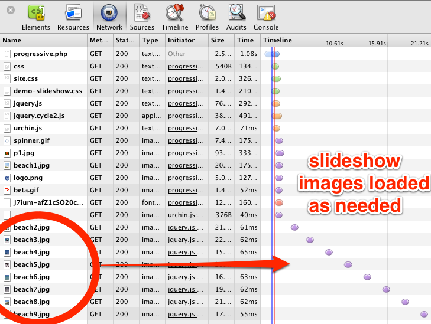

Progressive loading is a great way to reduce the bandwidth required by your slideshow. Typically, a slideshow declares all of its slides in the markup and the browser downloads all of the images needed when the page loads. This is fine in many cases, but for bandwidth-challenged devices this is unacceptable. Cycle2's progressive download support allows you to declare a slideshow with very few slides and then load more on demand if they are needed.
The slideshows on this page start off with just a single slide. Each time a new slide is needed, any images that it contains are loaded from the server (if not already loaded). So as the slideshows progress, new slides are downloaded on demand.
The data-cycle-progressive attribute is used to identify an element in the DOM
which holds either a JSON array or HTML text representing the slides to be loaded.
See the examples below to understand how the slide data should be formatted.
Example 1 - JSON Data
This example shows how slide data can be embedded as JSON data inside a text script block.
<div class="cycle-slideshow auto"
data-cycle-fx=scrollHorz
data-cycle-timeout=2000
data-cycle-caption=".caption1"
data-cycle-caption-template="{{slideNum}} / 9"
data-cycle-loader=true
data-cycle-progressive="#images"
>
<!-- only one image declared in markup -->
<img src="http://jquery.malsup.com/cycle2/images/beach1.jpg">
<!--
JSON array of slides to be loaded progressively,
nested inside a script block. The script block does not need
to be inslide the slideshow container, it can be anywhere on the
page. Note the type on the script tag.
-->
<script id="images" type="text/cycle">
[
"<img src='http://jquery.malsup.com/cycle2/images/beach2.jpg'>",
"<img src='http://jquery.malsup.com/cycle2/images/beach3.jpg'>",
...
"<img src='http://jquery.malsup.com/cycle2/images/beach9.jpg'>"
]
</script>
</div>
<div class="center caption1"></div>
As always, your JSON must be properly formatted! That means double quotes around
the array values. For example: [ "<div>slide one</div>", "<div>slide two</div>" ]

Example 2 - HTML Text Data
This example shows how slide data can be embedded as plain text markup within a script block. In this case, the default behavior of Cycle2 is that it assumes each slide is on it's own line, as shown below.
<div class="cycle-slideshow auto"
data-cycle-fx=scrollHorz
data-cycle-timeout=2000
data-cycle-caption=".caption2"
data-cycle-caption-template="{{slideNum}} / 9"
data-cycle-loader=true
data-cycle-progressive="#images2"
>
<!-- only one image declared in markup -->
<img src="http://jquery.malsup.com/cycle2/images/beach1.jpg">
<!--
markup for slides to be loaded progressively, nested
inside a script block. The script block does not need
to be inslide the slideshow container, it can be anywhere on the
page. Note the type on the script tag.
Note: by default, each slide needs to be on it's own line.
-->
<script id="images2" type="text/cycle">
<img src='http://jquery.malsup.com/cycle2/images/beach2.jpg'>
<img src='http://jquery.malsup.com/cycle2/images/beach3.jpg'>
...
<img src='http://jquery.malsup.com/cycle2/images/beach9.jpg'>
</script>
</div>
<div class="center caption2"></div>
Example 3 - Delimited HTML Text Data
This example shows how slide data can be flexibly embedded as plain text markup within
a script block. And how the slide elements can be delimited using the
data-cycle-split attribute. The slides in this slideshow contain
multiple elements and their text markup spans multiple lines. The data-cycle-split attribute
on the script tag tells Cycle2 where to split the text in order to build an array
of slide text. In this case, the split value is set to --- (three dashes)
and the same sequence is used to separate the slides.
<div class="cycle-slideshow auto"
data-cycle-fx=scrollHorz
data-cycle-timeout=2000
data-cycle-caption=".caption3"
data-cycle-caption-template="{{slideNum}} / 5"
data-cycle-loader=true
data-cycle-progressive="#slides"
data-cycle-slides=">div"
>
<div>
<img src="http://jquery.malsup.com/cycle2/images/beach1.jpg">
<p>Image 1</p>
</div>
<script id="slides" type="text/cycle" data-cycle-split="---">
<div>
<img src="http://jquery.malsup.com/cycle2/images/beach2.jpg">
<p>Image 2</p>
</div>
---
<div>
<img src="http://jquery.malsup.com/cycle2/images/beach3.jpg">
<p>Image 3</p>
</div>
---
<div>
<img src="http://jquery.malsup.com/cycle2/images/beach4.jpg">
<p>Image 4</p>
</div>
---
<div>
<img src="http://jquery.malsup.com/cycle2/images/beach5.jpg">
<p>Image 5</p>
</div>
</script>
</div>
<div class="center caption3"></div>
Image 1
Manual
This example shows that progressive loading works just as well for manual slideshows.

Programmatic
If you're one of those devs that prefers writing script and you don't want to
use the above declarative approach, Cycle2 has you covered. You can pass
the cycle() function an option hash that includes the
progressive property, and assign that property value to either
a JSON array or a function that returns a JSON array.
<div class="#mySlideshow"
data-cycle-loader=true
>
<img src="http://jquery.malsup.com/cycle2/images/p1.jpg">
</div>
<script>
var slides = [
"<img src='http://jquery.malsup.com/cycle2/images/p2.jpg'>",
"<img src='http://jquery.malsup.com/cycle2/images/p3.jpg'>",
"<img src='http://jquery.malsup.com/cycle2/images/p4.jpg'>"
];
$('#mySlideshow').cycle({
progressive: slides
});
</script>
Visualization
The image below shows the network traffic for a progressively loaded slideshow.

Limitations
Currently, slideshows with pagers are not supported with the progressive option.
This seems like an edge case, but if there is an uproar then I'll add support for it.